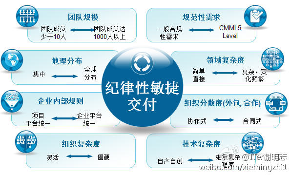

//@奥卡姆剃刀:医生被杀，冷静地质疑他收回扣了吗？护士被打，冷静地质疑她态度恶劣了吗？孩子被摔，冷静地质疑孩子妈阻碍人家停车了吗？好像他质疑的若成立了，杀打摔就有理一样，这种冷静是冷血，这种理性是没人性。---:抱歉，作者已设置仅展示半年内微博，此微博已不可见。
@CTO俱乐部 健身群不到60人，一直聊的都是健身话题，每周晒些奥森公园健步走活动的照片。昨天开始，忽然因为一个推荐人才的信息，引发大家纷纷公布自己的邮箱收简历，然后引出更多的推荐和招募，有成招聘群的趋势。- 大概是因为大家经过线下很多次的接触，相互信任感大增，能判断推荐靠谱程度的缘故。
//@ITer谢明志: @IBM-爱T派的奇思妙想 @Ada李力 请转发 网页链接 [马到成功]@育儿男人帮_毛豆爸爸:基于DAD方法的可扩展的ASM敏捷框架 - 团队规模、技术复杂度、企业规范、组织地区分布等八个维度决定了企业敏捷落地的后的具体形态。 网页链接 
被AT了就转吧。俺是不是已经给大家留下女权主义的印象了？@朱身勇:经济独立事业发展快速的大量大龄单身女生的重要纠结是她们还有一个传统的心。这就是经济发展步子太大扯着蛋了！她们找不到同龄男人，大她们的事业男人又要找年龄小的女人。其实，大陆男人一直是经济扯着传统思维的蛋，幼稚。@桂杰 @Ada李力